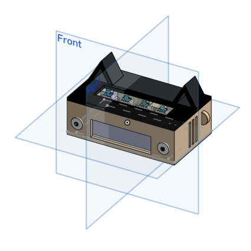
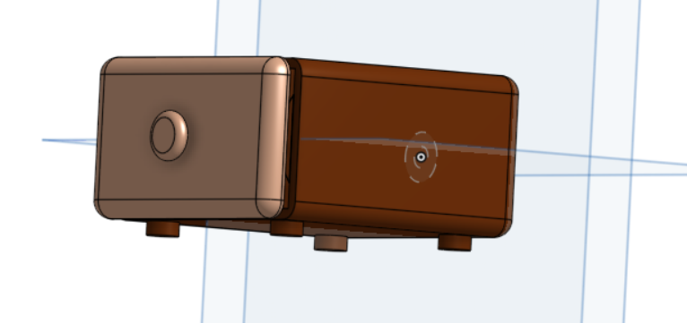
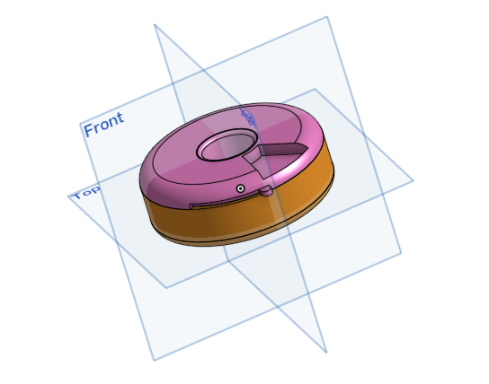
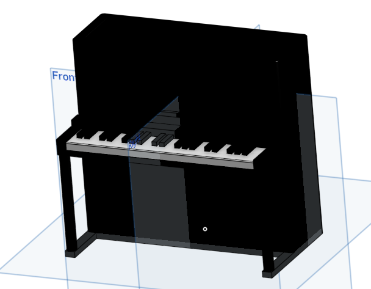
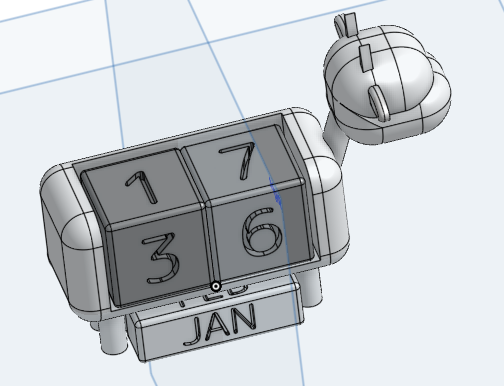
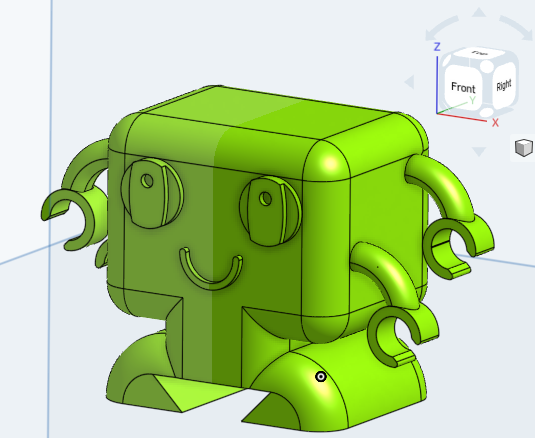
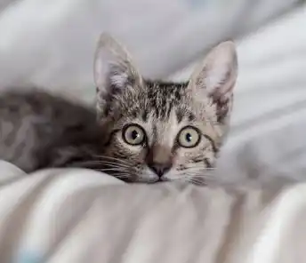
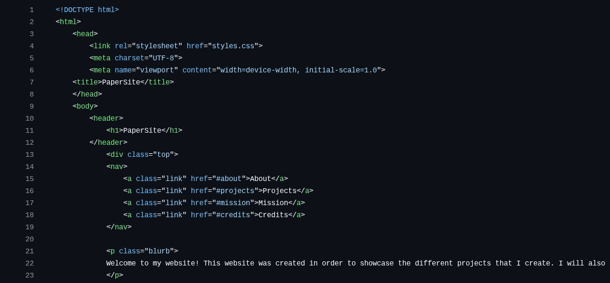
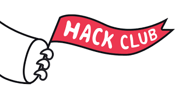

Welcome to my website! This website was created in order to showcase the different projects that I create. I will also try to update this often in order to make a pleasant experince for the viewer.
I made this website in line with the Stardance event hosted by Hack Club. I followed the guide for creating a personal website, and that is how I made this website for all to read! You can click the link below to view my GitHub repository with all of the code and some files!
The link to my GitHub repositoryBelow are some of the projects I have worked on. Most if not all of these are open source, which mean you can absolutely use them! Just put credit where credit is due. Stealing work is not a very nice thing






My mission is to learn about the different types of coding, hardware, and software that exists and making cool and useful stuff out of it. If I can, I would like to spread this accessibility to learning to other people so they can try out technology and see if it is something they enjoy.
My Current Projects: Designing this website, participating in as many YSWS for all of them goodies! I hope to get some really nice hardware to enhance my learning without having to just code all the time.
I would like to thank Hack Club for providing me with the guides to make this website possible. I've always wanted to learn how to make a website and it is really cool and fun to see how fast and easy it is to make one. It will be fun to customize this website to my heart's content, so stay tuned for any upcoming edits.



Socials
GitHub: I post almost every project I made with details, information, and files! Feel free to look.
YouTube: I posted a lot of Roblox videos, but I will soon upload more tech videos soon.